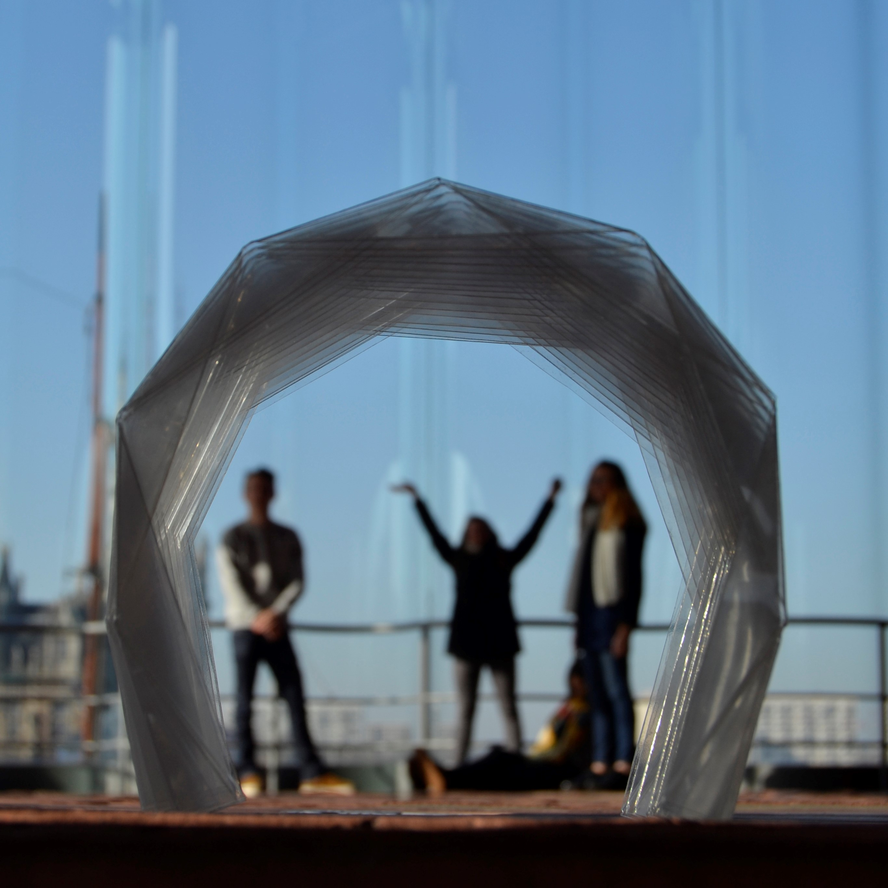
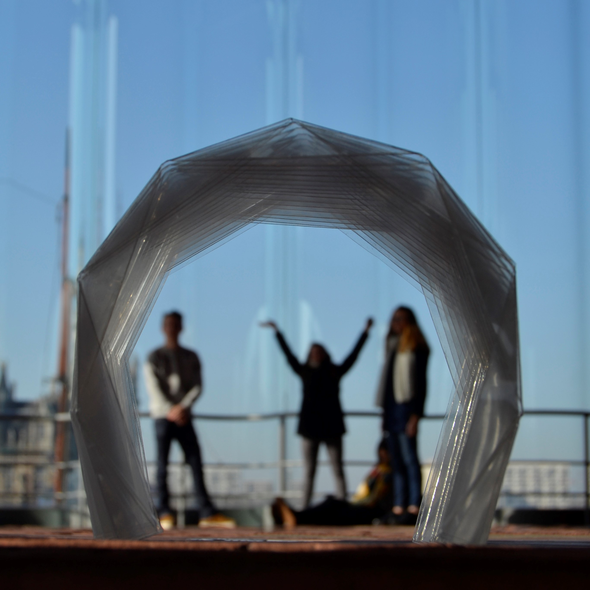

About Dewi
Passionate about origami for more than 10 years and more recently by textile pleating, Dewi Brunet has developed strong skills and knowledge of folding. He believes a simple fold can help us understand better our world and improve it with applied innovations. He is always eager to teach and share the multiple bridges between folding, science, architecture, technology and fashion.
Dewi Brunet exhibits his work, organizes workshops, creates interior design, sell objects and contributes to events. His folding style is modern, abstract, organic and geometric. You can take direct contact with him for any project or idea you would like to implement, or visit his Instagram or Facebook page for an overview of his work.
Latest projects
In architecture
For the 2017 and 2018 edition of ReACT by Design at the University of Antwerp in Belgium, Dewi Brunet proposed to work on nomad architecture. A group of 15 students were invited during one week to produce large structure using the opportunities of folding. Lightweight, fast prototyping, cheap, transportable and adaptable were all the advantages folding bought in order to rethink the way we can produce and live architecture.
Dewi Brunet will continue to teach such workshops and aim to collaborate with enterprises to produce nomad folded structure on larger scale.
 

In fashion


Dewi Brunet is exploring new folding opportunities through fabric pleating. He is using for this a very unique process, nowadays limited to a few craftsmen working mainly for haute couture. This new folding skill enabled him to explore a new range of possible applications, including the creation of a “resilient dress” for pregnant women. For 2018 he obtained an annual grant from the TAMAT, Contemporary art centre of textiles of the Federation Wallonia-Brussels where he is able to develop is research.
Dewi intends to teach textile pleating at university in design, fashion or textile and to produce a first series of objects to sell.